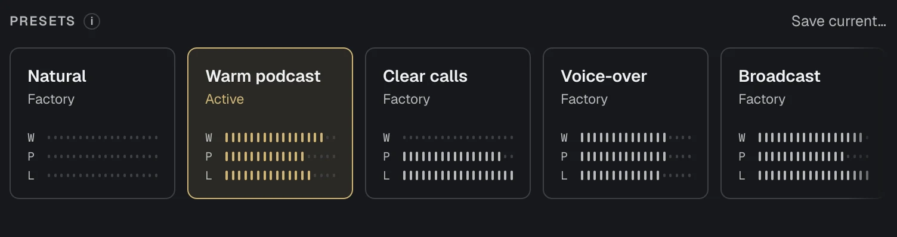
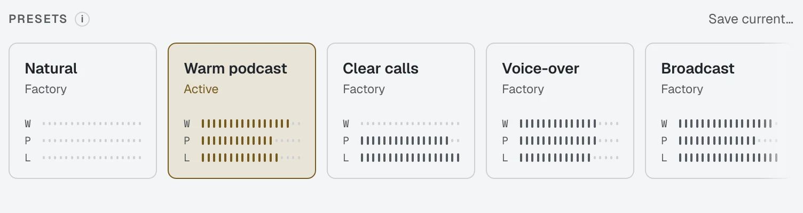
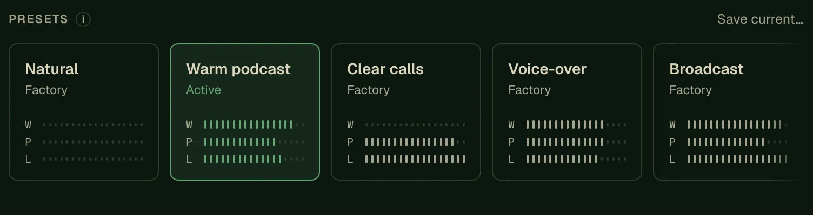

Presets you can hear
Nine presets set the compressor, Big Bottom, Aural Exciter, and high-pass filter in one step. A card shows Active while the hardware matches it, and Edited after you change a control.
Natural, Warm podcast, Clear calls, Voice-over, Broadcast, Streaming, Bright, Soft voice, and Singing.


